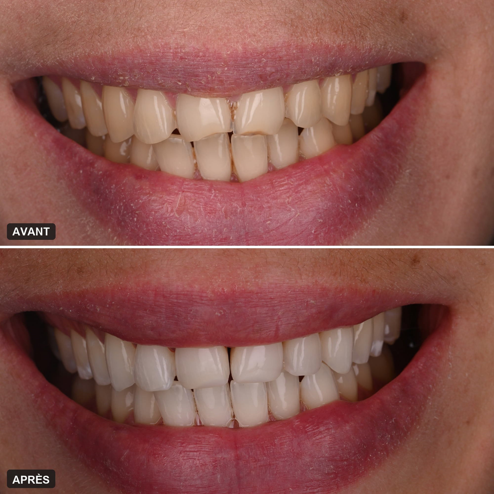
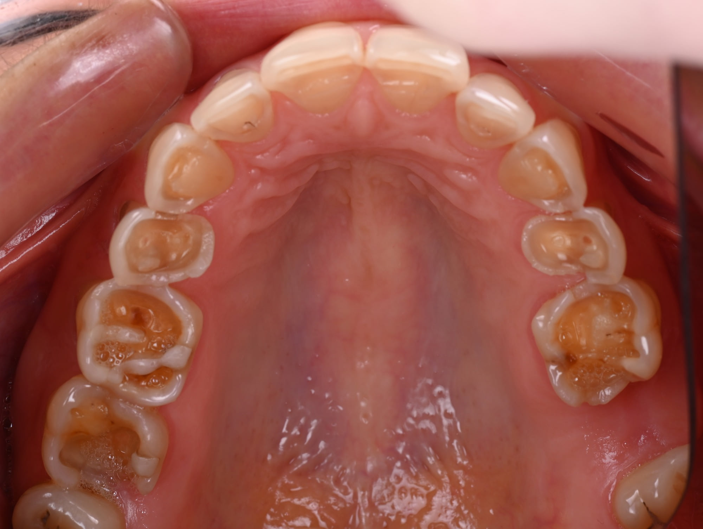
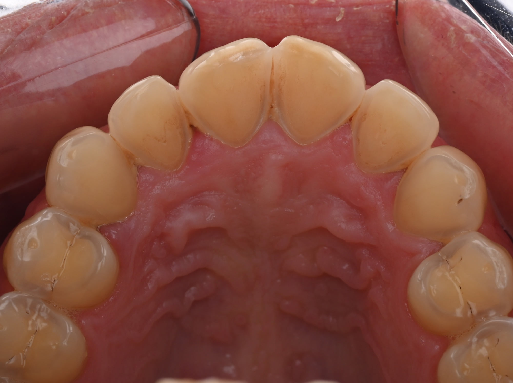
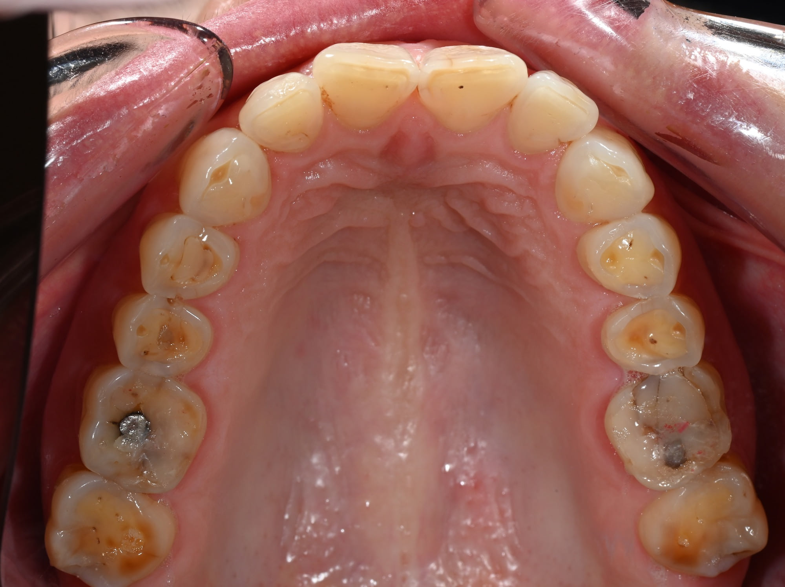
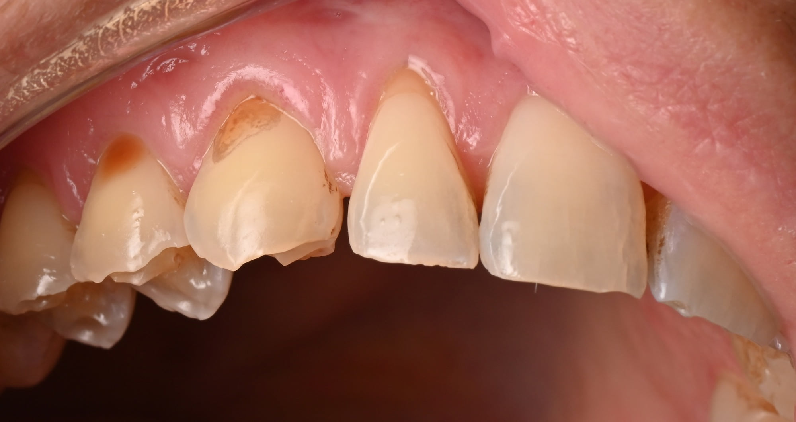
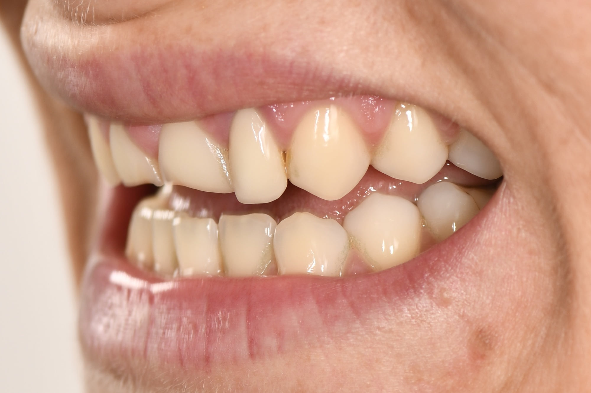
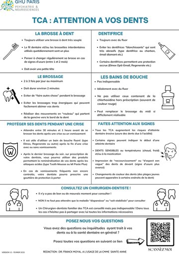
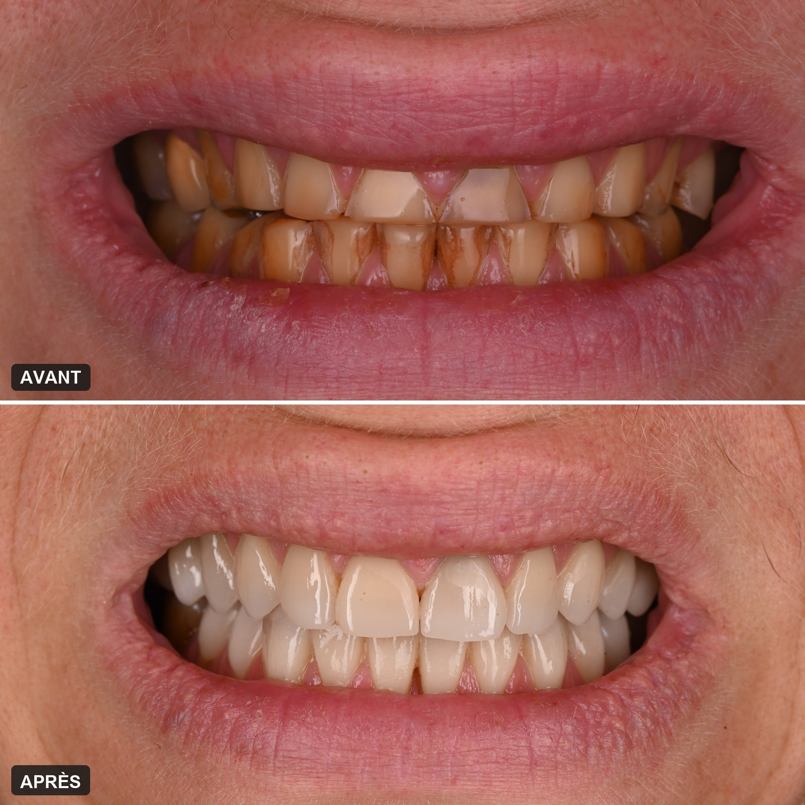
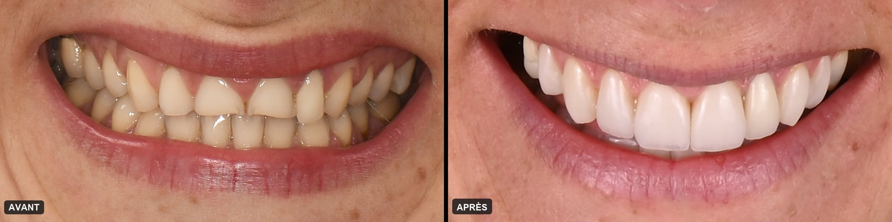

Accueil › Patient › Troubles des conduites alimentaires (TCA)
Le sujet
Troubles des conduites alimentaires (TCA)
Les dents face à l’anorexie, à la boulimie et aux vomissements
Le dépistage, la prévention et la réhabilitation des atteintes dentaires liées aux troubles des conduites alimentaires (TCA) — anorexie, boulimie, hyperphagie boulimique — sont l’une des pierres angulaires de mon exercice. Ces atteintes restent trop souvent méconnues des chirurgiens-dentistes, tout comme la maladie elle-même. Et il n’est pas simple de confier son trouble à un praticien que l’on ne connaît pas, et qui ne connaît pas la maladie : beaucoup de patientes et de patients hésitent à pousser la porte d’un cabinet. Méconnaissance d’un côté, appréhension de l’autre : la prise en charge arrive souvent tard, alors qu’une meilleure connaissance de la maladie et de ses conséquences bucco-dentaires aurait permis d’agir plus tôt. Connaître les risques, consulter, savoir comment protéger ses dents et comment les reconstruire si besoin : c’est le plus important.

Praticien attaché à la CMME, hôpital Sainte-Anne · Président de DenTCA

1 / 7
Quels sont les effets des TCA sur les dents ?
Le principal, c’est l’érosion : l’émail est dissous par les acides, ceux de l’estomac ou de l’alimentation, et il ne repousse pas. S’y ajoutent, selon les cas, des sensibilités, des caries, une bouche sèche et des gencives fragilisées.
Le risque est massif : d’après la synthèse de référence sur le sujet, les personnes atteintes de TCA ont cinq fois plus de risque d’érosion dentaire que les autres, et plus de sept fois quand elles se font vomir.
Anorexie, boulimie, hyperphagie : trois troubles, trois atteintes
Dans la boulimie, ce sont les vomissements : l’acide gastrique attaque d’abord la face interne des dents du haut. Dans l’anorexie restrictive, l’érosion peut s’installer sans un seul vomissement, par une alimentation acide et une salive qui se raréfie. Dans l’hyperphagie boulimique, sans vomissements, le risque principal est la carie, entretenue par les crises et le grignotage sucré.
Ces troubles sont fréquents : selon la Haute Autorité de santé, la boulimie touche environ 1,5 % des 11–20 ans, trois filles pour un garçon, et l’hyperphagie boulimique 3 à 5 % de la population.
Pas seulement les dents
La salive protège les dents : elle neutralise les acides et répare les premières attaques. La dénutrition, la déshydratation et certains médicaments la raréfient. Les glandes salivaires peuvent gonfler sous les oreilles, les gencives se fragiliser et se rétracter. Et le sourire change, ce qui pèse lourd chez des patientes et des patients souvent déjà en souffrance avec leur image.
 En vidéo · 32 sL’anorexie et les dentsVoir la vidéo →
En vidéo · 32 sL’anorexie et les dentsVoir la vidéo →

En bref
- L’érosion est l’atteinte principale
- Cinq fois plus fréquente en cas de TCA
- Possible avec ou sans vomissements
- Ce qui est perdu ne repousse pas
- Elle se freine, et elle se répare
2 / 7
Boulimie et vomissements : que fait l’acide aux dents ?
Le contenu de l’estomac est très acide. À chaque vomissement, il baigne les dents et dissout l’émail, en commençant par la face interne des incisives et des canines du haut. Au fil des mois, les dents s’amincissent, raccourcissent et deviennent sensibles.
Où l’érosion commence
Pendant un vomissement, la langue recouvre les dents du bas ; celles du haut reçoivent l’acide de plein fouet, sur leur face interne, celle qu’on ne voit pas dans le miroir. L’émail y devient lisse et brillant, puis disparaît et laisse apparaître la dentine, jaune. Privés de soutien, les bords des incisives deviennent fins, translucides, et s’ébrèchent : c’est l’aspect de « dents courtes », caractéristique des vomissements répétés.
Puis les molaires
Les molaires se creusent en cupules, les anciens plombages semblent dépasser de la dent, et la dentine mise à nu rend douloureux le froid, le chaud, le sucré ou l’acide : manger devient une gêne. Quand les vomissements ou un reflux surviennent la nuit, couché sur le côté, l’érosion peut toucher un côté plus que l’autre.
Reflux et régurgitations
Un reflux gastro-œsophagien ou des régurgitations répétées, le mérycisme, produisent les mêmes lésions. C’est leur forme et leur place, lues par un praticien expérimenté, qui orientent vers leur origine.
Une surface ramollie par l’acide s’use ensuite beaucoup plus vite : c’est pourquoi se brosser les dents juste après avoir vomi aggrave les dégâts (voir plus bas : que faire après avoir vomi).
 En vidéo · 52 sL’érosion dentaireVoir la vidéo →
En vidéo · 52 sL’érosion dentaireVoir la vidéo →

Les signes d’une érosion par vomissements
- Face interne des dents du haut lisse, puis jaunie
- Bords des incisives fins, translucides, ébréchés
- Des dents qui paraissent plus courtes
- Molaires creusées, plombages qui dépassent
- Sensibilité au froid et aux acides
3 / 7
Anorexie : les dents s’abîment aussi sans vomissements
Oui, l’anorexie restrictive peut éroder les dents sans un seul vomissement. Une alimentation très acide, une salive qui se raréfie, la déshydratation et certains médicaments suffisent à fragiliser l’émail.
Une alimentation « saine », mais acide
Agrumes, fruits acides, crudités au vinaigre, sodas light, eaux aromatisées, boissons citronnées, tisanes aux fruits : les aliments choisis pour leur faible apport calorique sont souvent les plus acides, et consommés à petites gorgées tout au long de la journée. C’est la fréquence qui use l’émail.
Une salive qui ne protège plus, un brossage qui use
La dénutrition, la déshydratation et certains traitements raréfient la salive : les dents perdent leur défense naturelle contre les acides. Sur un émail ainsi ramolli, un brossage énergique et souvent répété emporte la surface ; au ras de la gencive, des encoches se creusent.
Les carences abîment-elles les dents ?
Elles fragilisent surtout les gencives et l’os qui porte les dents. L’émail d’une dent déjà formée, lui, ne se « décalcifie » pas de l’intérieur : ce qui l’use, ce sont les acides et le manque de salive.
Les mécanismes sont détaillés dans la page Anorexie restrictive : érosion dentaire sans vomissements.


Sans vomissements, ce qui use les dents
- Une alimentation acide, par petites prises répétées
- Une salive rare : dénutrition, déshydratation, médicaments
- Un brossage trop énergique sur un émail ramolli
4 / 7
Le dentiste peut-il voir un TCA ?
Souvent, oui. L’érosion de la face interne des dents du haut est un signe que le chirurgien-dentiste reconnaît, parfois avant l’entourage et avant même que le trouble ait été nommé. La Haute Autorité de santé demande aux chirurgiens-dentistes d’y penser, en particulier chez les adolescents et les jeunes adultes.
Les signes qui doivent faire y penser
Une érosion débutante sur la face interne des incisives et des canines du haut ; des molaires du bas usées d’un seul côté ; de nombreuses caries apparues en peu de temps ; une sensibilité au froid ou aux acides ; des glandes salivaires gonflées.
Une érosion ne suffit jamais au diagnostic
Un reflux, une alimentation acide ou un médicament peuvent donner des lésions proches. Le rôle du dentiste n’est pas de poser un diagnostic psychiatrique : c’est de reconnaître un signal, d’en parler, de protéger la bouche et d’orienter.
En parler, sans jugement
Le Dr Franck Moyal aborde le sujet en tête-à-tête, à partir de ce qu’il voit sur les dents, sans juger ni culpabiliser : expliquer d’où viennent les lésions suffit souvent à ouvrir la discussion. Ce qui lui est confié reste couvert par le secret médical. Si besoin, il oriente vers le médecin traitant ou une équipe spécialisée : c’est son quotidien à la CMME.

Ce que le dentiste repère
- Érosion de la face interne des dents du haut
- Molaires du bas usées d’un seul côté
- Caries nombreuses et récentes
- Sensibilité au froid ou aux acides
- Glandes salivaires gonflées
5 / 7
Que faire après avoir vomi pour protéger ses dents ?
Ne pas se brosser les dents tout de suite : attendre entre 30 minutes et une heure après une crise ou un vomissement. Juste après la crise, un bain de bouche fluoré protège l’émail ; ensuite, une brosse très souple et un dentifrice fluoré.
Pourquoi ne pas brosser aussitôt
Juste après un vomissement, l’émail est ramolli par l’acide : le brosser à ce moment-là, c’est en emporter une couche. Il faut laisser à la salive le temps de neutraliser l’acide et de durcir à nouveau la surface.
Les gestes qui protègent
Après une crise, avec ou sans vomissements : un bain de bouche fluoré. Au quotidien : une brosse à dents très souple, à petite tête, changée tous les un à deux mois ; un dentifrice fluoré, jamais « blanchissant » — au charbon ou « émail diamant », ces dentifrices sont très abrasifs ; deux à trois brossages par jour au plus, de deux minutes, en mouvements de rouleau de la gencive vers le bord de la dent, sans appuyer. Et boire de l’eau.
Sur prescription, et au cabinet
Le soir, après le dernier brossage, des produits qui aident à reminéraliser l’émail peuvent être prescrits ; en cas de vomissements fréquents, pas encore maîtrisés, une gouttière de protection. Le vernis fluoré et une fine couche de résine collée sur les zones sensibles complètent la protection. Ces mesures freinent l’érosion pendant que le trouble est soigné : elles ne remplacent pas ce soin, mais elles sauvent beaucoup d’émail en attendant.

Guide à télécharger · PDF Télécharger le guide de conseils pour vous protéger au mieux « TCA : attention à vos dents », rédigé par le Dr Franck Moyal pour les patients de la CMME, hôpital Sainte-Anne. Télécharger le guideAprès une crise ou un vomissement
- Ne pas brosser tout de suite
- Attendre 30 minutes à une heure
- Bain de bouche fluoré
- Brosse très souple, dentifrice fluoré
- Pas de dentifrice « blanchissant »
- Boire de l’eau
6 / 7
Comment soigner des dents abîmées par un TCA ?
En deux temps, sans attendre la guérison pour agir : d’abord protéger les dents pendant la maladie, ensuite les reconstruire, en ajoutant de la matière plutôt qu’en les taillant, quand la situation est stable.
Pendant le trouble : protéger, soulager, ne pas attendre
Les lésions débutantes se prennent en charge d’emblée, même si les vomissements continuent : c’est la recommandation de la Haute Autorité de santé. Fluor, résine collée sur les surfaces exposées, traitement des sensibilités et des caries, réparations simples : rien de tout cela n’attend la fin du trouble. Le dentiste ne soigne pas le TCA lui-même ; il protège la bouche pendant que l’équipe médicale le prend en charge.
Quand la situation est stable : reconstruire
Il n’existe pas de délai universel : le bon moment dépend de l’activité du trouble, de l’étendue des dégâts, de la gêne et du projet de chacun, et il se décide avec l’équipe soignante. La reconstruction se fait alors par des techniques collées, qui ajoutent de la matière sans tailler les dents, ou presque : composite stratifié, pièces collées sur les molaires, facettes. Quand les dents ont beaucoup perdu, il faut leur rendre leur hauteur : c’est l’augmentation de la dimension verticale, prévisualisée et essayée en bouche avant d’être réalisée. C’est la réhabilitation des dents usées.
Le moins de couronnes possible
Tailler tout autour une dent déjà érodée pour la couronner, c’est sacrifier ce qui reste. L’approche additive préserve l’émail restant, et elle se répare facilement si l’érosion reprend : un point essentiel dans une maladie où les rechutes existent.
Un sourire dans lequel on se reconnaît
Le projet esthétique se construit avec la patiente ou le patient, à partir de photographies, d’une simulation, parfois de photos plus anciennes. Il vise un sourire naturel et durable, pas une perfection impossible.

Les solutions, de la plus légère à la plus complète
- Conseils, fluor et surveillance
- Résine de protection collée
- Composite collé
- Pièces collées et facettes
- Réhabilitation complète, avec augmentation de la dimension verticale
Avant / après

7 / 7
Quel dentiste consulter quand on a, ou a eu, un TCA ?
Un chirurgien-dentiste qui connaît ces troubles. Soigner les dents d’une personne atteinte de TCA demande de comprendre la maladie, d’en parler sans juger, de choisir le bon moment et de travailler avec l’équipe soignante. C’est un domaine à part, et il fait toute la différence.
Ce qui fait la différence
Reconnaître l’origine des lésions et en parler sans blesser ; protéger tôt au lieu d’attendre la destruction ; connaître les précautions médicales — les vomissements répétés font chuter le potassium, ce qui impose des précautions lors de l’anesthésie ; planifier une reconstruction qui ménage les dents et résiste à une éventuelle reprise du trouble ; échanger avec le psychiatre, le médecin traitant, le diététicien.
Le Dr Franck Moyal, une référence en France
Le Dr Franck Moyal est une référence en France dans la prise en charge dentaire des patientes et des patients atteints de TCA. Praticien attaché depuis 2024 à la CMME de l’hôpital Sainte-Anne — la Clinique des maladies mentales et de l’encéphale, qui accueille le centre expert des TCA —, il a participé, avec les chefs de service, à la mise en place d’une consultation de dépistage bucco-dentaire des érosions liées aux TCA, intégrée au parcours d’évaluation initiale des patients.
Il a fondé et préside DenTCA, l’association qui développe le dépistage, la prévention et la formation des praticiens, et constitue un réseau de chirurgiens-dentistes formés aux TCA. Il a co-dirigé deux thèses sur le sujet : l’une sur ce que savent les chirurgiens-dentistes des effets des TCA sur la bouche (2025), l’autre sur la création d’un outil de dépistage et de sensibilisation (2026). Praticien hospitalier à la Pitié-Salpêtrière, il enseigne la prise en charge de l’érosion et des usures à ses confrères.
Au cabinet, à Paris 9e
Chirurgien-dentiste spécialisé dans la prise en charge dentaire des TCA, il reçoit à son cabinet de Paris 9e les patientes et les patients, et les parents quand il s’agit d’adolescents, sans jugement et en toute confidentialité : pour un bilan, des soins de protection ou une reconstruction complète, en lien avec l’équipe qui les suit.
Si vous souffrez, ou avez souffert, d’un trouble des conduites alimentaires, ne laissez pas l’érosion avancer en silence : un bilan suffit souvent à protéger ce qui peut encore l’être.
Questions fréquentes
Le dentiste peut-il voir que je me fais vomir ?
Souvent, oui : les vomissements répétés laissent une érosion caractéristique sur la face interne des dents du haut. Mais le dentiste n’est là ni pour juger ni pour dénoncer : il protège vos dents, et ce que vous lui confiez reste couvert par le secret médical.
Faut-il dire à son dentiste que l’on a un trouble alimentaire ?
Oui, si vous le pouvez : cette information améliore le diagnostic, les conseils de prévention et le choix du bon moment pour reconstruire. Elle reste confidentielle et n’entraîne aucun jugement.
L’émail abîmé par les vomissements peut-il repousser ?
Non. L’émail ne se régénère pas : ce qui est perdu l’est définitivement. Le fluor durcit la surface restante et freine l’érosion ; seule une restauration rend le volume perdu, le plus souvent sans tailler les dents.
Pourquoi mes dents sont-elles sensibles depuis que je vomis ?
Parce que l’acide a dissous l’émail et mis la dentine à nu : elle conduit le froid, le chaud et l’acide jusqu’au nerf de la dent. Un dentifrice adapté, du fluor et, si besoin, une fine couche de résine collée sur les zones exposées soulagent rapidement.
Peut-on faire des soins dentaires pendant un TCA actif ?
Oui. Prévention, protection des dents, soins urgents ou nécessaires et traitement des sensibilités se font pendant la prise en charge du trouble, sans attendre. Seule la reconstruction importante est programmée selon la stabilité de la situation.
Faut-il attendre la guérison pour reconstruire ses dents ?
Pas forcément. Il n’existe pas de délai universel : on protège et on soigne tout de suite, et la reconstruction plus importante se programme quand la situation est assez stable, en accord avec l’équipe soignante. Les techniques collées se réparent facilement si l’érosion reprend.
Mon enfant souffre d’anorexie ou de boulimie : quand consulter un dentiste ?
Dès le début de la prise en charge, sans attendre de voir des dégâts. Un premier bilan sert de référence, permet de protéger l’émail avant que l’érosion ne s’installe et de conseiller votre enfant ; des contrôles réguliers suivent, en lien avec l’équipe qui le soigne.
Combien coûtent les soins ?
Le prix est établi de manière personnalisée, selon l’étendue des lésions et le traitement retenu, et vous est remis après le bilan, avant tout engagement.
Faire le point sur l’état de vos dents
Un bilan pour évaluer l’érosion et vous conseiller, avant d’envisager quoi que ce soit.
Prendre rendez-vousSources scientifiques
Les références ci-dessous soutiennent les principaux messages cliniques de cette page.
- [1] Kisely S, Baghaie H, Lalloo R, Johnson NW. Association between poor oral health and eating disorders: systematic review and meta-analysis. Br J Psychiatry. 2015;207(4):299–305. — DOI : 10.1192/bjp.bp.114.156323 — PubMed
- [2] Chan CCK, Chen AMC, Lam PPY. Oral health status of individuals with eating disorders: Systematic review and meta-analysis. J Dent. 2024;151:105427. — DOI : 10.1016/j.jdent.2024.105427 — PubMed
- [3] Haute Autorité de santé. Boulimie et hyperphagie boulimique : repérage et éléments généraux de prise en charge. Fiche outil « Repérage et prise en charge de l’état dentaire par le chirurgien-dentiste ». Recommandation de bonne pratique, juin 2019. — has-sante.fr
- [4] Nijakowski K, Jankowski J, Gruszczyński D, Surdacka A. Eating Disorders and Dental Erosion: A Systematic Review. J Clin Med. 2023;12(19):6161. — DOI : 10.3390/jcm12196161 — PubMed
- [5] Valeriani L, Frigerio F, Piciocchi C, et al. Oro-dental manifestations of eating disorders: a systematic review. J Eat Disord. 2024;12(1):87. — DOI : 10.1186/s40337-024-01050-8 — PubMed
- [6] Niederau C, Alman E, Rizk M, et al. The influence of anorexia nervosa on oral health and related parameters potentially relevant to orthodontic treatment: a systematic review and meta-analysis. Clin Oral Investig. 2025;29(1):76. — DOI : 10.1007/s00784-024-05774-4 — PubMed
- [7] Anderson S, Gopi-Firth S. Eating disorders and the role of the dental team. Br Dent J. 2023;234(6):445–449. — DOI : 10.1038/s41415-023-5619-x — PubMed
- [8] Imfeld C, Imfeld T. Eating disorders (II)—dental aspects. Schweiz Monatsschr Zahnmed. 2005;115(12):1163–1171. — PubMed
- [9] Faine MP. Recognition and management of eating disorders in the dental office. Dent Clin North Am. 2003;47(2):395–410. — DOI : 10.1016/S0011-8532(02)00108-8 — PubMed
- [10] Fan J, Wang B, Wang L, et al. Clinical performance of minimally invasive full-mouth rehabilitation using different materials and techniques for patients with moderate to severe tooth wear: a systematic review and meta-analysis. Clin Oral Investig. 2025;29(2):96. — DOI : 10.1007/s00784-025-06181-z — PubMed
- [11] Chantler JGM, Pirc M, Strauss F, et al. Rehabilitation of the Worn Dentition With Direct and Indirect Minimally Invasive Concepts—A Systematic Review and Meta-Analysis. J Esthet Restor Dent. 2025;37(3):690–701. — DOI : 10.1111/jerd.13384 — PubMed